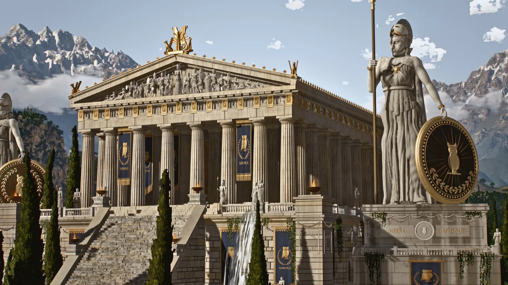
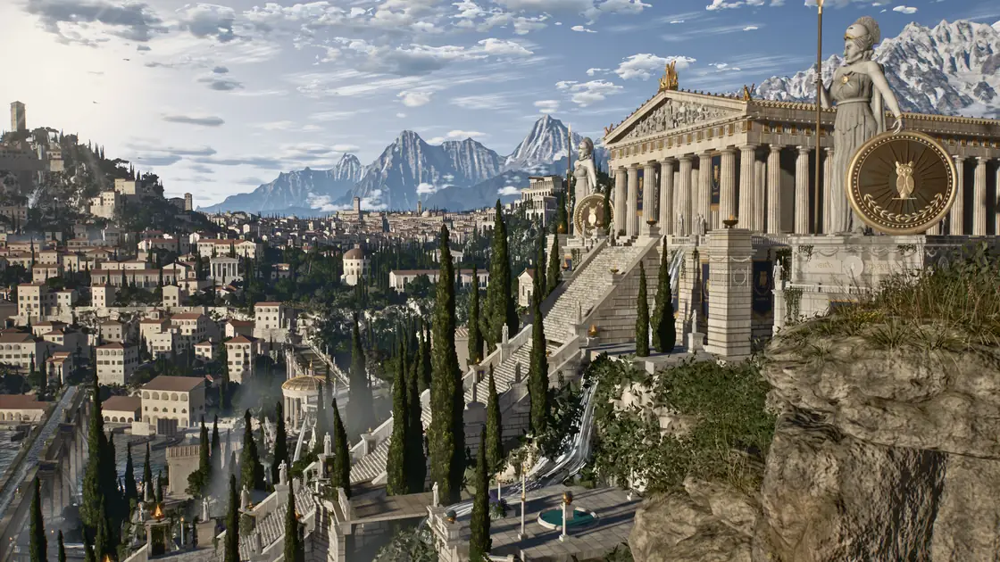
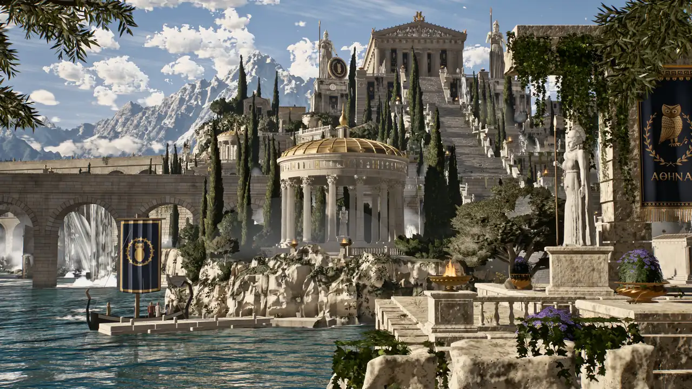
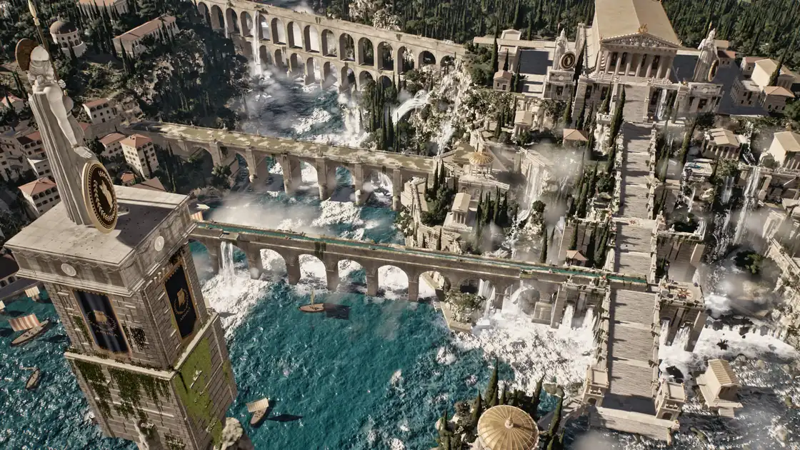
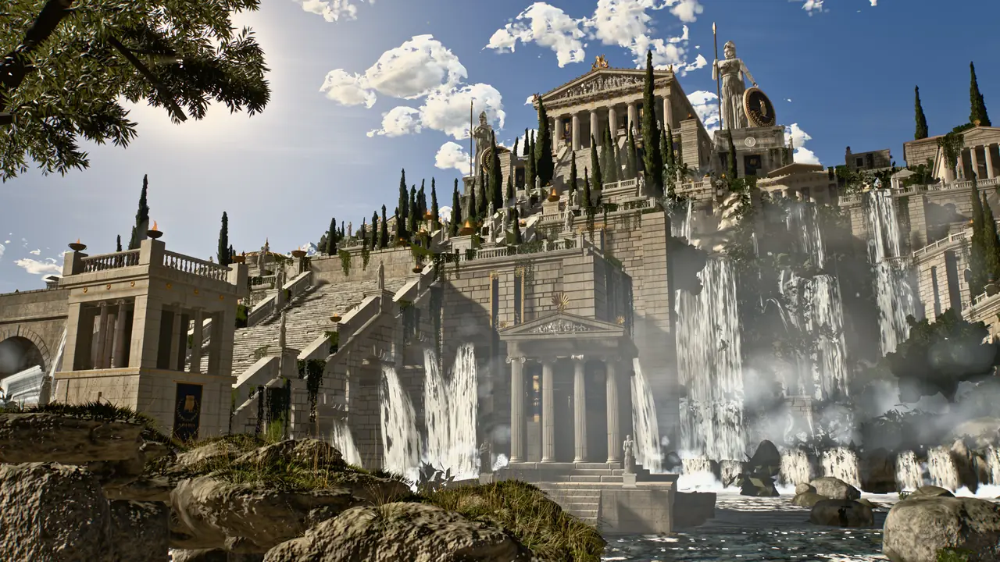
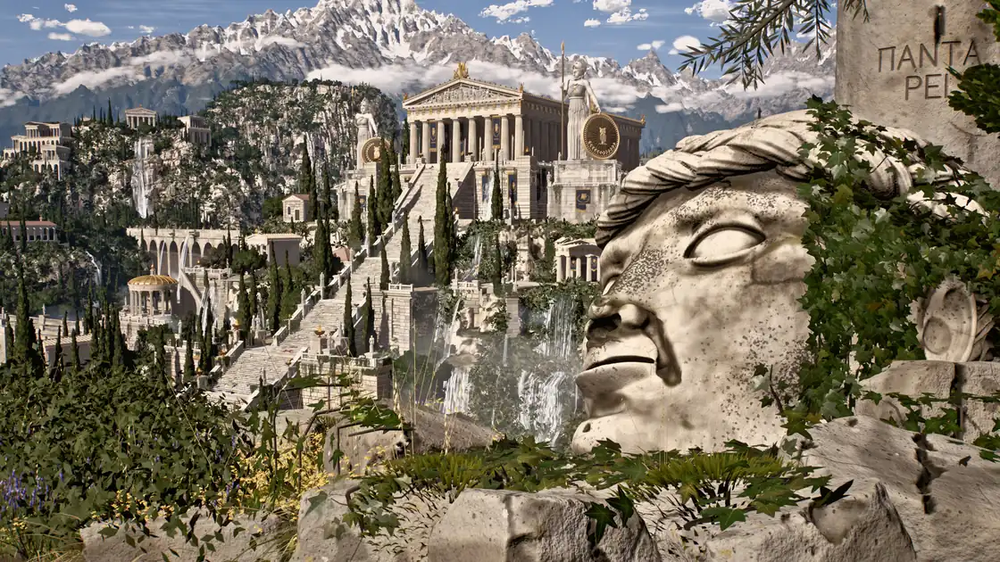
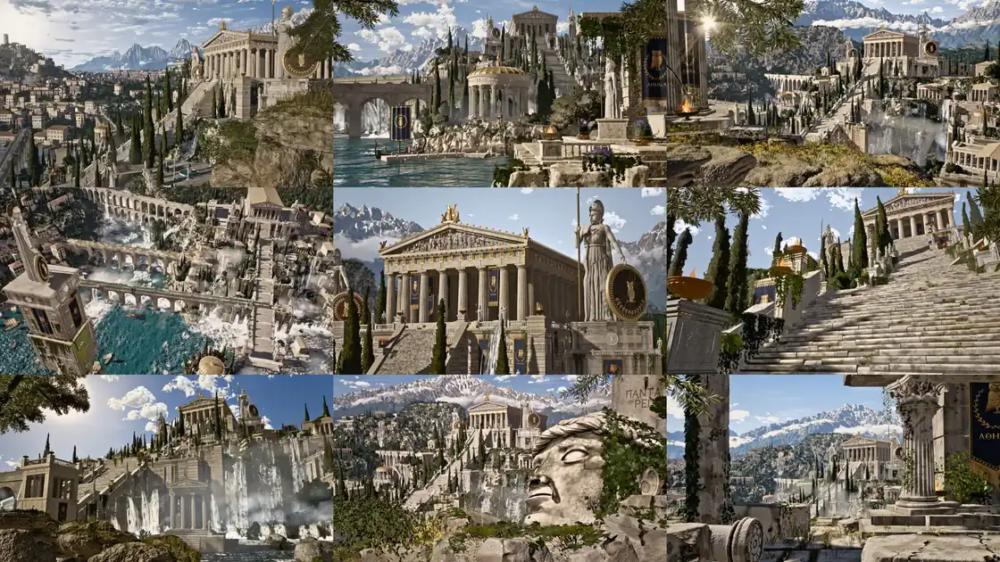
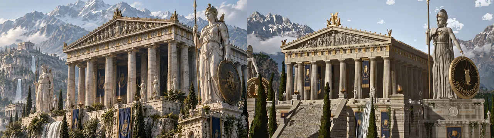
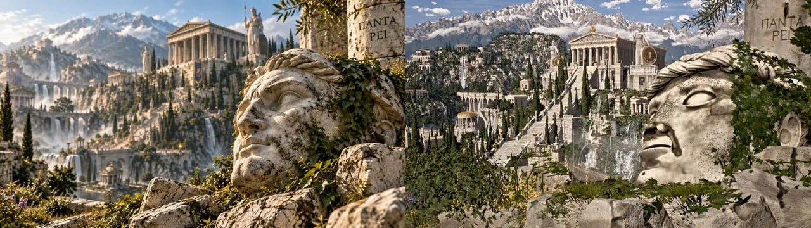

数据通过公开 GitHub API 获取，时间 2026-11-02 18:40（UTC+8）。仓库建于 2026-10-18 06:42（UTC+8），只有 2 个提交：首版整体提交，以及 15 分钟后补上 9 张参考图与对比图；之后无更新，没有 Releases，没有在线演示站。本站数了一下：src/ 下 168 个 JS 模块、43,797 行，加上 tools/ 共约 4.49 万行，与 README 自报的“约 4.5 万行、168 个模块”一致。

media/shot5.jpg（作者 4K 渲染的缩小版），依 MIT 许可转载并压缩为 WebP。它是什么
Athenaion（意为“雅典娜神庙”）是一个纯代码的 3D 场景，不是游戏，也不是可以无限探索的开放世界。它有 9 个固定机位，每个机位都对着一张事先准备好的参考图去“复刻”：构图、比例、材质，尤其是颜色。最终产出是 9 张 4K 静帧和一段 54 秒的 4K/30fps 展示短片（短片不在仓库里，本站也没有转载）。
作者在 README 中的原话：There are no external assets: every mesh, texture, shader, tree, statue and waterfall is generated procedurally.
（没有任何外部素材：每个网格、纹理、着色器、每棵树、每尊雕像、每道瀑布都是程序化生成的。）
场景里有：石灰岩崖体上的卫城（四层台地、挡土墙、高台和一道大台阶）；帕特农式多立克神庙（金色顶饰、雕塑山花、排档间饰、猫头鹰旗帜）；三尊雅典娜巨像和几十尊小雕像（全部用有向距离场 SDF 雕刻再网格化）；57 道沿真实地形追踪出来的瀑布，以及泻湖、急流河段和带平面反射的海；渡槽和桥、程序化房屋组成的城市、停着船只的港口、岛上的圆形神殿；约 14.9 万棵柏树、橄榄树、松树和阔叶树；被侵蚀的雪山、体积云和空气透视；前景还有一颗倒地的巨型大理石头像和一段残破的柱廊。






media/overview.jpg）以上均为作者仓库 media/ 中的渲染图，依 MIT 许可转载并缩小、压缩为 WebP；动图 teaser.gif 与展示短片未转载。
作者自报的数字
README 列了一张“账单”。这些数字都是作者自报，本站只能核对其中与仓库内容有关的部分：
| 项目 | 作者自报 | 本站核对 |
|---|---|---|
| 总耗时 | 墙钟约 45 小时（10 月 16 日 03:36 至 10 月 18 日 00:34） | ⚠️ 未核实。README 没写时区；首个提交时间是 2026-10-17 22:42 UTC，如果作者用的是中欧夏令时（UTC+2），“10 月 18 日 00:34”收工、8 分钟后提交，时间上吻合（⚠️ 推断） |
| 搭建与迭代 | 约 27 小时，9 轮多 agent 迭代 | ⚠️ 未核实；代码注释里确实随处可见 “r2”“r4”“r5” 这样的轮次标记 |
| Agent | 55 个子 agent（最多 12 个并行），约 147 agent·小时 | ⚠️ 未核实；docs/CONTRACT.md 的“文件归属”“READY 标记文件”“多个 agent 同时渲染要用不同输出名”等规则与多 agent 并行的说法相符 |
| 最终渲染 | 4K 静帧 + 54 秒 4K/30fps 视频，约 13 小时 GPU 时间 | ⚠️ 未核实（视频不在仓库） |
| 代码量 | 约 4.5 万行 JS，168 个模块 | ✅ src/ 168 个模块 / 43,797 行；含 tools/ 约 44,920 行 |
| Token | 约 1100 万输出、38 亿缓存读取、1.61 亿缓存写入 | ⚠️ 未核实 |
| 折合 API 成本 | 按 Opus 5.5 API 价约 1.8k–2.3k 美元（实际用 Claude Max 订阅跑） | ⚠️ 未核实；“Opus 5.5”这个模型名本站未独立核对 |
它是怎么做出来的
README 把过程压缩成四步，docs/ 里的三份文档把细节摊开了。比结果更值得看的，是这套“让几十个 agent 合力画一幅画”的组织方式。
1. 引擎先行：先搭好“摄影棚”
Claude Code 先写的不是神庙，而是引擎：渲染框架、大气、天空、阴影和累积渲染管线（src/core/）。之后所有模块都遵守同一个接口：每个模块导出 build(engine)（在完整世界里搭建自己负责的东西）和 test(engine)（在原点附近搭一个隔离小场景并返回几个测试机位）。某个模块抛错只会被记录，不会拖垮整个世界的构建。
2. 美术圣经 + 模块契约：把“像参考图”写成可检查的规则
docs/ART_BIBLE.md 把 9 张参考图翻译成了文字规格：太阳在画面左侧、仰角 15–30°；受光大理石是暖奶油色，阴影是被天空照亮的冷蓝灰，“绝不是黑色”；强烈的空气透视；海军蓝底、金色猫头鹰的旗帜（给出了色值 #1b2550 / #c9a24e）；连倒地头像所在的柱子上要刻 “ΠΑΝΤΑ ΡΕΙ”（万物流变）都写了进去。最“工程”的一条是曝光目标：9 张参考图的 sRGB 亮度百分位（p02、p10、p50、p90、p98）被量出来写成区间，渲染结果可以用 tools/colorstats.mjs 逐张比对。
docs/CONTRACT.md 是给 agent 看的“施工守则”：性能预算（全场景绘制调用约 3000 以内、三角形约 2500 万以内，每个模块构建 10 秒以内）；时间必须确定，禁止 Date / Math.random，统一用带标签的种子随机数；每个共享材质族只归一个 agent 所有，别人只能引用、不能改；接口稳定后放一个 READY 标记文件，别的 agent 才开始依赖；GPU 渲染加了 4 槽锁，“先想清楚再渲染，别刷屏”。
3. 12 个专职 agent 并行，各自“渲染—比对—修正”
地形、水、天空、建筑、卫城、渡槽、雕像、废墟、树木、花草、城市、道具，各由一个 agent 负责。每个 agent 渲染自己的成果，输出一张“参考图 | 渲染图”的对比图（out/shotN_cmp.png），用 crop.mjs 放大同一区域对照、用 sample.mjs 取色，然后改、再渲染，循环往复。为了不每次都重建整个世界，还有一个常驻会话：世界只构建一次，换机位或调色每次约 5 秒出图。
4. 导演、look-dev 再收紧
后面几轮由“导演”、“look-dev”（视觉开发）和模块 agent 继续收紧构图、颜色、细节密度和瀑布。docs/COMPOSITION.md 是导演 agent 的工作记录，很有意思：它用针孔相机模型拟合参考图里神庙的角点，反推出每个机位离神庙只有 100–260 米（第 0 轮放到了 600 多米外）；发现 9 张参考图里神庙“永远从右前方被看到”，于是把神庙朝向定为正南；还在页面里做了一个射线拾取工具，可以问“这张图的这个像素是哪个物体”。
几个值得一看的技术点
- SDF 雕塑：雕像、巨型头像和岩石都写成有向距离函数，再用块稀疏的窄带采样 + naive surface nets 网格化（
src/sculpt/mesher.js）。耗时的几何可以用node tools/bake.mjs预先烘焙成generated/*.bin，没烘焙就在运行时现算（README 提醒首次加载会很慢）。 - 瀑布是“追踪”出来的：每道瀑布从水口按抛物线出发，沿真实地形挂过岩檐、流过台地、跌向下一级，拆成几条并行的子水流，中间缝出水幕，前面再加细的散落水丝；在落点和入水处布置水雾与翻腾的白水，并在水面上推出泡沫环（
src/modules/waterfalls.js）。 - 离线画质来自“累积”，不是来自显卡：每帧渲染 N 个子帧（亚像素抖动抗锯齿、薄透镜景深、软阳光阴影、运动模糊），在浮点缓冲里平均，再做基于 mip 链的辉光、AgX 色调映射、多尺度局部色调映射、OkLCh 分色相二级调色，最后按参考图的亮度百分位自动调色阶（
src/core/pipeline.js）。画质档位从 preview（1 spp）到 ultra（48 spp）。
用到的提示词
作者把整个会话里自己发的消息合并成一段放在 docs/PROMPT.md，配合 9 张参考图交给 Claude Code（Opus 5.5，xhigh）。要点：零外部素材；“尽可能贴近参考图（目标 99.9%）”，尤其颜色；处处有细节，不许看起来像复制粘贴；瀑布和水要真实；显卡弱（Radeon 780M），所以要高效，画质靠离线渲染换；只在本项目文件夹里工作；“需要多久就迭代多久（几小时或几天）”；先出静帧给我看，批准后再渲染约 1 分钟的 4K 展示片，配网上的免费电影感音乐并署名。全文见原仓库 docs/PROMPT.md。
参考图与成品对比
9 张参考图本身是 AI 生成的图片（README 原话 “AI-generated reference images”），放在 refs/。下面是作者对比图里的两行，左为参考图、右为最终 4K 渲染（缩小版）：


裁自作者仓库 media/reference_vs_render.jpg（9 行对比），依 MIT 许可转载。参考图由哪个 AI 工具生成、其版权状况如何，仓库没有说明 ⚠️ 未核实。
快速上手
git clone https://github.com/Leonxlnx/athenaion
cd athenaion
npm install # three、pngjs、puppeteer-core
node tools/serve.mjs
# 浏览器打开 http://localhost:8080/?shot=1&quality=preview
# 数字键 1–9 切换机位，鼠标环绕重几何（地形网格、雕像、巨型头像）没有提交，首次加载会在运行时生成，很慢；可以先烘焙一次：node tools/bake.mjs terrain / statues / head。渲染静帧与视频需要 Chrome 或 Edge：node tools/render.mjs --shot 1 --quality high --spp 16 --w 3840 --h 2160。
⚠️ 本站没有在本地运行这个项目：它的整场景预算约 2500 万三角形，作者自己也是在 GPU 上跑的，而本站环境只有软件 WebGL，预计无法在合理时间内出图。因此本页所有图片都是作者的渲染图，而不是本站复现结果。仓库有一个 23.8 MB 的 generated/terrain-far-v11.bin，是代码烘焙出的远景地形，不算外部素材。
与同作者的 Shanshui 对比
两周内，Leon Lin 先后发了两个“零素材、AI agent 对照参考图逐区域复刻”的项目。Athenaion 在前（10 月 18 日），本站已收录的 Shanshui 在后（10 月 19 日）：
| Athenaion | Shanshui | |
|---|---|---|
| 题材 | 写实古希腊世界，3D | 中国水墨山水，2.5D 视差卡片 |
| 技术栈 | three.js r186，PBR + 离线累积渲染 | WebGL2 + Canvas2D，无第三方运行时依赖 |
| 参考图 | 9 张 AI 生成图，放进了仓库 | 10 张参考画，不在仓库 |
| 规则文档 | ART_BIBLE / CONTRACT / COMPOSITION / PROMPT | ENGINE / STYLE / FILM / LIBRARY |
| 确定性 | 禁 Date/Math.random，种子随机数 | 场景是 t 的纯函数，同样禁随机 |
| 硬件 | 都以 AMD Radeon 780M 集成显卡为预算基准 | |
| 成片 | 54 秒，未放入仓库 | 60 秒，放在 Releases |
共同的方法论很清楚：先把“像不像”变成可量化的检查（对比图、取色、亮度百分位），再让 agent 在这个闭环里反复迭代；用契约文档约束多个 agent 的分工与文件归属；坚持确定性，让任意一帧都能单独重渲。
启发
- “目标”必须能被机器读懂。“像参考图”这种要求本来很主观，这个项目把它拆成了亮度百分位、色值、机位参数和逐区域对比图，agent 才能自己判断有没有进步。
- 多 agent 协作，靠的是文件归属而不是聊天。每个文件只有一个主人、共享文件只能做最小的增量修改、READY 标记、GPU 锁、输出文件名不冲突，这些都是很朴素的工程规则，却是 12 个 agent 能并行而不互相踩脚的前提。
- 弱显卡可以用时间换画质。交互预览走低档，最终成片靠多次采样累积，这让一台轻薄本也能产出 4K 静帧。
- 警惕“账单”的叙事。约 2000 美元等值 token、147 agent·小时，本身就是一种展示；对想复现的人来说，真正可复用的是
docs/里的流程，而不是那张数字表。
⚠️ 核实与说明
- 耗时、agent 数量、token 量、API 等值成本、“Opus 5.5”模型名、渲染时长：均为作者自报，本站无法独立核实 ⚠️。
- 本站唯一核过的数字是代码规模：168 个模块 ✅；行数 43,797（src）/ 约 44,920（含 tools），与“约 4.5 万行”相符 ✅。
- “零外部素材”指运行时不加载图片、模型等文件；但整个世界是对着 9 张 AI 生成参考图复刻的，参考图来源与版权仓库未说明 ⚠️。
- 展示短片配乐是 Kevin MacLeod 的 “Ascending the Vale”（CC BY 4.0），不在仓库中；本站未转载视频与音乐。
- 推广与利益关系：这是作者自己的展示仓库，也在为 Claude Code / Claude Max 背书（README 致谢 “Built with Claude Code”），⚠️ 未见作者披露与 Anthropic 有商业合作，本站也未查到。本站与作者、Anthropic 均无关系。
- 本站没有在本地运行此项目，所有图片均为作者渲染图。
附录：README 全文中文翻译
依 MIT 许可翻译转载，保留版权与许可声明。图片引用以原仓库为准；英文原文见下方折叠块。
Athenaion
一个用 three.js 完全以代码构建的庞大古希腊世界。没有任何外部素材：每个网格、纹理、着色器、每棵树、每尊雕像、每道瀑布都是程序化生成的。Claude Code（Opus 5.5）花了大约 2 天把它搭出来，以贴合 9 张参考图；它在一块笔记本集成显卡（AMD Radeon 780M）上以 4K 渲染完成。
（此处原文为动图 teaser.gif 与九机位总览图 overview.jpg）
里面有什么
- 石灰岩崖体上的一座卫城，带台地、挡土墙、高台和一道宏伟的大台阶
- 一座帕特农式的多立克神庙，带镀金顶饰、雕塑山花、排档间饰和猫头鹰旗帜
- 雅典娜巨像和几十尊较小的雕像，全部以有向距离场雕刻并网格化
- 57 道经过追踪的瀑布，带水花、水雾和泡沫，外加一片泻湖、一条有急流的河，以及一片带平面反射的海
- 渡槽和桥梁、一座由程序化房屋组成的城市、一个停泊着船只的港口、一座岛上的圆形神殿
- 14.9 万棵柏树、橄榄树、松树、阔叶树和灌木，还有常春藤、青草和花
- 一条被侵蚀的积雪山脉、体积云、云堤和空气透视
- 前景中一颗倒地的巨大大理石头像和一段残破的柱廊
- 一个离线渲染器，带抖动累积（抗锯齿、软阴影、运动模糊）、AgX 色调映射、局部色调映射、辉光和调色
（此处原文为 shot5、shot2、shot4、shot8 四张图的表格）
数字
总时间 墙钟约 45 小时（10 月 16 日 03:36 至 10 月 18 日 00:34） 搭建与迭代 约 27 小时，共 9 轮多 agent 迭代 Agent 55 个子 agent（最多 12 个并行），约 147 agent·小时 最终渲染 4K 静帧加一段 54 秒 4K 30fps 视频，约 13 小时 GPU 渲染 代码 168 个模块中约 4.5 万行 JavaScript Token 约 1100 万输出 token、约 38 亿缓存读取 token、约 1.61 亿缓存写入 token 折合 API 成本 按 Opus 5.5 API 价格约 1.8k 至 2.3k 美元（实际是在 Claude Max 订阅上运行的） 参考图
这个世界所要贴合的 9 张 AI 生成参考图在
refs/中。左：参考图，右：最终 4K 渲染。（此处原文为对比图 reference_vs_render.jpg）
它是怎么做的
整个会话的提示词在 docs/PROMPT.md 中。
- Claude Code 先写了引擎：渲染框架、大气、天空、阴影和累积管线。
- 它写了一份美术圣经和模块契约（
docs/），然后并行运行 12 个专职 agent：地形、水、天空、建筑、卫城、渡槽、雕像、废墟、树木、花草、城市和道具。每个 agent 渲染自己的成果，与参考图比较，然后在循环中修正。- 之后几轮由导演、look-dev 和模块 agent 收紧构图、颜色、细节密度和瀑布，使用与每张参考图的并排对比和颜色统计。
- 最终视频逐帧渲染（每帧 8 或 4 个采样，带运动模糊），用交叉淡化剪辑并配乐。
运行
npm install node tools/serve.mjs然后打开
http://localhost:8080/?shot=1&quality=preview。数字键 1–9 切换镜头，鼠标环绕。重几何（地形网格、雕像、巨型头像）没有提交。首次加载会在运行时构建它们，这很慢。烘焙一次即可：
node tools/bake.mjs terrain node tools/bake.mjs statues node tools/bake.mjs head渲染静帧和视频需要 Chrome 或 Edge：
node tools/render.mjs --shot 1 --quality high --spp 16 --w 3840 --h 2160 node tools/render-video.mjs --w 1920 --h 1080 --spp 8 --quality high致谢
使用 Claude Code（Claude Opus 5.5）和 three.js 构建。
展示视频中的音乐：Kevin MacLeod（incompetech.com）的 “Ascending the Vale”，以 CC BY 4.0 许可。音乐不属于本仓库。
MIT 许可。
README 英文原文（English original）
# Athenaion
A massive ancient Greek world built entirely in code with three.js. There are no external assets: every mesh, texture, shader, tree, statue and waterfall is generated procedurally. Claude Code (Opus 5.5) built it over about 2 days to match 9 reference images, and it was rendered in 4K on an integrated laptop GPU (AMD Radeon 780M).


## What's in it
- An acropolis on a limestone cliff massif with terraces, retaining walls, a podium and a grand stair
- A Parthenon-style Doric temple with gilded acroteria, sculpted pediments, metopes and owl banners
- Colossal Athena statues and dozens of smaller statues, all sculpted as signed distance fields and meshed
- 57 traced waterfalls with spray, mist and foam, plus a lagoon, a river with rapids and a sea with planar reflections
- Aqueducts and bridges, a city of procedural houses, a harbour with ships, a tholos on an island
- 149k cypress, olive, pine and broadleaf trees and shrubs, with ivy, grass and flowers
- An eroded snowy mountain range, volumetric clouds, cloud banks and aerial perspective
- A giant fallen marble head and a ruined portico in the foreground
- An offline renderer with jittered accumulation (AA, soft shadows, motion blur), AgX tone mapping, local tone mapping, bloom and colour grading
| | |
|---|---|
|  |  |
|  |  |
## Numbers
| | |
|---|---|
| Total time | ~45 h wall clock (Oct 16, 03:36 to Oct 18, 00:34) |
| Building and iterating | ~27 h across 9 multi-agent rounds |
| Agents | 55 subagents (up to 12 in parallel), ~147 agent-hours |
| Final rendering | 4K stills plus a 54 s 4K 30fps video, ~13 h of GPU rendering |
| Code | ~45k lines of JavaScript in 168 modules |
| Tokens | ~11M output tokens, ~3.8B cache-read tokens, ~161M cache-write tokens |
| API-equivalent cost | ~$1.8k to $2.3k at Opus 5.5 API prices (actually run on a Claude Max subscription) |
## References
The 9 AI-generated reference images the world was built to match are in [`refs/`](refs). Left: reference, right: final 4K render.

## How it was made
The whole session prompt is in [docs/PROMPT.md](docs/PROMPT.md).
1. Claude Code wrote the engine first: the render harness, atmosphere, sky, shadows and the accumulation pipeline.
2. It wrote an art bible and module contract (`docs/`), then ran 12 specialist agents in parallel: terrain, water, sky, architecture, acropolis, aqueducts, statues, ruins, trees, flora, city and props. Each agent rendered its work, compared it against the references and fixed it in a loop.
3. Further rounds of director, look-dev and module agents tightened composition, colour, detail density and waterfalls, using side-by-side comparisons and colour statistics against every reference.
4. The final video was rendered frame by frame (8 or 4 samples per frame with motion blur), cut with crossfades and scored.
## Running it
```bash
npm install
node tools/serve.mjs
```
Then open `http://localhost:8080/?shot=1&quality=preview`. Keys 1-9 switch shots and the mouse orbits.
Heavy geometry (terrain meshes, statues, the giant head) is not committed. The first load builds it at runtime, which is slow. To bake it once:
```bash
node tools/bake.mjs terrain
node tools/bake.mjs statues
node tools/bake.mjs head
```
Rendering stills and video needs Chrome or Edge:
```bash
node tools/render.mjs --shot 1 --quality high --spp 16 --w 3840 --h 2160
node tools/render-video.mjs --w 1920 --h 1080 --spp 8 --quality high
```
## Credits
Built with Claude Code (Claude Opus 5.5) and [three.js](https://threejs.org).
Music in the showcase video: "Ascending the Vale" by Kevin MacLeod (incompetech.com), licensed under [CC BY 4.0](http://creativecommons.org/licenses/by/4.0/). The music is not part of this repository.
MIT licensed.MIT 许可声明原文（LICENSE）
MIT License
Copyright (c) 2026 Leon Lin
Permission is hereby granted, free of charge, to any person obtaining a copy
of this software and associated documentation files (the "Software"), to deal
in the Software without restriction, including without limitation the rights
to use, copy, modify, merge, publish, distribute, sublicense, and/or sell
copies of the Software, and to permit persons to whom the Software is
furnished to do so, subject to the following conditions:
The above copyright notice and this permission notice shall be included in all
copies or substantial portions of the Software.
THE SOFTWARE IS PROVIDED "AS IS", WITHOUT WARRANTY OF ANY KIND, EXPRESS OR
IMPLIED, INCLUDING BUT NOT LIMITED TO THE WARRANTIES OF MERCHANTABILITY,
FITNESS FOR A PARTICULAR PURPOSE AND NONINFRINGEMENT. IN NO EVENT SHALL THE
AUTHORS OR COPYRIGHT HOLDERS BE LIABLE FOR ANY CLAIM, DAMAGES OR OTHER
LIABILITY, WHETHER IN AN ACTION OF CONTRACT, TORT OR OTHERWISE, ARISING FROM,
OUT OF OR IN CONNECTION WITH THE SOFTWARE OR THE USE OR OTHER DEALINGS IN THE
SOFTWARE.